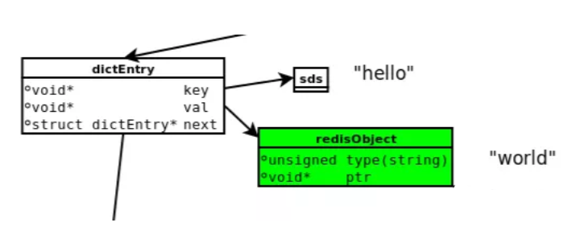
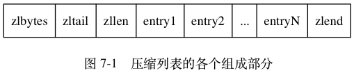

Redis的一些理解
简介
redis是一个开源的内存中的数据结构存储系统，我们常常可以那他来用作缓存、数据库和消息中间件。高效而可靠的外部缓存服务是应用的不可缺少的一部分。
本文将从以下几个角度来谈谈咱们的理解：
- 有多快
- 为什么快
- 有什么用
- 怎么用好
有多快
咱们可以看看官方的说明。
为什么快
- 和数据库不同，redis将数据放在内存里，读写数据不会受到磁盘I/O限制。
- 数据结构简单，对于数据操作也简单。
- 采用单线程单进程，避免了不必要的上下文切换及concurrent问题，同样的不会因进程切换而导致性能损耗
- NIO(多路复用)
内存数据
Redis is an in-memory but persistent on disk database, so it represents a different trade off where very high write and read speed is achieved with the limitation of data sets that can’t be larger than memory. Another advantage of in memory databases is that the memory representation of complex data structures is much simpler to manipulate compared to the same data structure on disk, so Redis can do a lot, with little internal complexity. At the same time the two on-disk storage formats (RDB and AOF) don’t need to be suitable for random access, so they are compact and always generated in an append-only fashion (Even the AOF log rotation is an append-only operation, since the new version is generated from the copy of data in memory).
Redis的数据是在内存中并可以持久化到硬盘的，这是一个折中的方案，意味着存储不大于内存限制的数量级时将可以拥有非常高的读写速率。另外的一个优点是，对于存储一个复杂的数据结构而言，内存表示将会简单很多，所以Redis能降低实现的复杂度。同时，RDB和AOF产生的持久化因为并不需要随机访问，他们产生的文件总是非常小且是增量产生（在AOF滚动日志中也只是添加动作，新的副本版本只是从当前内存中产生的）。
我们可以理解为：
- 存储数据量由内存决定（不建议使用虚拟内存，该功能已在2.4版本后停止支持）
- 内存中实现的数据结构比存储于文件的复杂度更低，衍生可以理解为用字段表示数据结构与程序使用数据结构的比较。
- RDB与AOF为redis持久化的两种方式
- 我们从Redis拿数据访问的是内存
那么持久化至硬盘的数据既然不访问，那我们就可以猜测是类似于日志备份的一个策略，在启动时通过这些文件，将数据拉起到内存中。
我们继续看RDB和AOF：
- RDB(Redis DataBase): 指在指定的时间间隔内将内存中的数据集快照写入磁盘，先将数据集写入临时文件，写入成功后，再替换之前的文件，用二进制压缩存储。
- AOF(Append Only File): 以日志的形式记录操作，可以打开文件看到详细的操作记录。
不出所料，RDB是全备份，AOF是日志备份，差异显而易见。
优势：
- RDB全备份更好拉起，不影响性能且适合做冷备份。
- AOF有更高的数据安全性且其备份高可读，可以通过其做误删回复
劣势： - RDB在数据量大时可能导致服务停止小段时间（1秒左右），在持久化间隔期宕机将失去改段时间的数据
- AOF的日志文件更大且数据恢复更慢，每次操作的日志操作将导致QPS降低
而为了鱼和熊掌兼得，在Redis4.0开始提供了RDB-AOF 混合持久化： 这种持久化能够通过 AOF 重写操作创建出一个同时包含 RDB 数据和 AOF 数据的 AOF 文件， 其中 RDB 数据位于 AOF 文件的开头， 它们储存了服务器开始执行重写操作时的数据库状态： 至于那些在重写操作执行之后执行的 Redis 命令， 则会继续以 AOF 格式追加到 AOF 文件的末尾， 也即是 RDB 数据之后。
单进程单线程
这里说的单进程单线程并不是指Redis就一个线程，而是处理请求是单一线程，毕竟咱们RDB还需要fork出进程去备份。
而对于处理请求单一线程，由于我们的内存操作够快，所以哪怕将并行化的请求串行化处理也能保证很高的QPS，而串行化处理事件避免了各种锁的问题，不存在加锁释放锁操作，没有因为可能出现死锁而导致的性能消耗。当然，对于一个核数多的吓人的机器，咱们可以多开一些实例来提高利用率嘛。
非阻塞I/O模型
NIO有很多种，Redis使用I/O多路复用。咱们这里不铺开叙述，多路复用是指使用一个线程来检查多个文件描述符（Socket）的就绪状态，比如调用select和poll函数，传入多个文件描述符（FileDescription，简称FD），如果有一个文件描述符（FileDescription）就绪，则返回，否则阻塞直到超时。得到就绪状态后进行真正的操作可以在同一个线程里执行，也可以启动线程执行（比如使用线程池）。虾米意思？就是派一个代表，同时监听多个文件描述符是否有数据到来。等着等着，如有有数据，就告诉某某你的数据来啦！赶紧来处理吧。
而Redis 会优先选择时间复杂度为 O(1) 的 I/O 多路复用函数作为底层实现，包括 Solaries 10 中的 evport、Linux 中的 epoll 和 macOS/FreeBSD 中的 kqueue，上述的这些函数都使用了内核内部的结构，并且能够服务几十万的文件描述符。如果找不到，那就只能用select（仅能服务1024个文件描述符）了。
有什么用
丰富的数据结构支持：
- String：缓存、限流、计数器、分布式锁、分布式Session
- Hash：存储用户信息、用户主页访问量、组合查询
- List：微博关注人时间轴列表、简单队列
- Set：赞、踩、标签、好友关系
- Zset：排行榜
redisObject

- dictEntry：Redis给每个key-value键值对分配一个dictEntry，里面有着
- key和val的指针，next指向下一个dictEntry形成链表，这个指针可以将多个
- 哈希值相同的键值对链接在一起，由此来解决哈希冲突问题(链地址法)。
- sds：键key“hello”是以SDS（简单动态字符串）存储。
- redisObject：值val“world”存储在redisObject中。实际上，redis常用5中类型都是以redisObject来存储的；而redisObject中的type字段指明了Value对象的类型，ptr字段则指向对象所在的地址。
redis通讯协议(RESP)
RESP 是redis客户端和服务端之前使用的一种通讯协议；
RESP 的特点：实现简单、快速解析、可读性好
For Simple Strings the first byte of the reply is “+” 回复
For Errors the first byte of the reply is “-“ 错误
For Integers the first byte of the reply is “:” 整数
For Bulk Strings the first byte of the reply is “$” 字符串
For Arrays the first byte of the reply is “*” 数组
String
字符串对象的底层实现可以是int、raw、embstr。embstr编码和int是通过调用一次内存分配函数来分配一块连续的空间，而raw需要调用两次。通常的embstr：<=39字节的字符串。int：8个字节的长整型。raw：大于39个字节的字符串。
List
一个quicklist(以前是Linklist和Ziplist)，可以两端进两端出
quickList 是 zipList 和 linkedList 的混合体。它将 linkedList 按段切分，每一段使用 zipList 来紧凑存储，多个 zipList 之间使用双向指针串接起来。因为链表的附加空间相对太高，prev 和 next 指针就要占去 16 个字节 (64bit 系统的指针是 8 个字节)，另外每个节点的内存都是单独分配，会加剧内存的碎片化，影响内存管理效率。
Linklist
双端列表，好插入，不好随机读取
Ziplist
压缩列表

Skiplist
为啥用跳表不用红黑树？
怎么用好
- 主从复制
一主多从或者一主一从。
主从之间数据完全相同，采用全量复制与增量复制的方式同步。 - 哨兵模式
官方推荐的HA方案就是Redis-Sentinel，在master挂掉后会选举一个master提供服务 - Redis-Cluster
集群方式提供了分布式的数据存储，即实现了分片(sharding)的支持，为了分片数据的可用的多备份
redis cluster集群方式支持主从自动切换
redis cluster集群只有一个库，单例或者主从的话有多个库
redis cluster集群去中心化，只要通过其中一个端口连接即可
redis cluster集群，只有一个db库，不支持多库
堆起来做HA，堆起来拉高QPS!